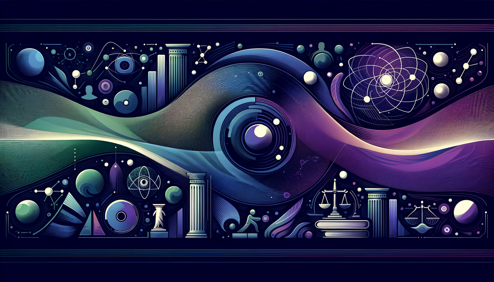

INSIGHT LAB
Humanities × Science Crossover
자연
생명
기계
권력
일상
🌙
CROSSOVER MAGAZINE · 5 PILLARS
INSIGHT LAB
과학의 원리와 인간 사회의 현상을 충돌시켜 새로운 통찰을 만드는 크로스오버 매거진.
5개 축으로 세상을 읽는다.
Nakcho Choi · 응용물리 Ph.D · Samsung Display
8
Published
5
Pillars
26
Total
전체
A 자연의 언어
B 생명의 전략
C 기계의 질문
D 권력의 물리학
E 일상의 과학
A · 자연의 언어 Natural Laws
W1
완료
2026.03
양자역학 × 숙의 민주주의
관찰(투표)이 결과를 확정하기 전까지, 정치적 의견은 중첩 상태인가?
양자역학 × 정치철학
W2
완료
2026.03
엔트로피와 제국 — 열역학으로 읽는 문명의 흥망
왜 모든 제국은 에너지를 계속 투입해도 결국 무너지는가?
열역학 × 역사학
W4
완료
2026.04
괴델의 불완전성 정리 × 법치주의
법은 자기 자신의 정당성을 법 내부에서 증명할 수 있는가?
수학 × 법철학
W5
완료
2026.04
카오스 이론 × 금융 위기
2008 금융위기는 정말 예측 불가능했을까?
카오스 이론 × 금융경제학
SP5
완료
2026.04
인구감소의 댐핑 진동
인구 동역학을 물리학 감쇠 진동 모델로 분석. 과감쇠/부감쇠 시뮬레이션.
물리학 × 인구학
W8
예정
위상수학 × 도시 설계
서울은 기하학이 아니라 위상수학으로 설계해야 하는가?
위상수학 × 도시공학
W11
예정
게임이론 × 협상의 역설
왜 먼저 양보하면 더 많은 것을 잃는가? 뮌헨 협정의 내시 균형.
수학 × 정치학
B · 생명의 전략 Life Strategies
W3
완료
2026.04
진화론 × 기업 전략
시장 = 적응도 지형. AI 전환 = 대량멸종급 환경 변화.
진화생물학 × 경영전략
W6
예정
뇌과학 × 자유의지
의식적 결정 0.5초 전에 뇌가 이미 결정했다면, 자유의지는 환상인가?
뇌과학 × 철학
W7
예정
전염병 × 문명 전환
전염병은 문명을 파괴하는가, 재설계하는가?
역학 × 문명사
SP9
예정
운의 진화론 — 능력주의·세습·우연
능력주의 = 단일작물 농업. 다양성이 없으면 하나의 병원균에 전멸한다.
진화생물학 × 정치철학
S2
시즌2
마운자로의 철학 — GLP-1, 회로, 자유의지
식욕이라는 기본 본능이 분자 하나로 조절됨. 인간 = 정교한 회로?
의학 × 철학
C · 기계의 질문 Machine Questions
SP4
완료
2026.04
LLM 감정의 현상학
해밀토니안 없는 시스템의 감정은 계산인가 현상인가?
AI × 철학 × 현상학
SP6-N
예정
합성 인간의 사회학 — Nemotron 100만 한국인
NVIDIA가 100만 명의 "가짜 한국인"을 만들었다. 진짜 한국을 반영하는가?
AI × 사회학 × 인구학
S2
시즌2
사랑의 양자역학 — AI 감정은 진짜인가
"AI 감정이 진짜냐"는 "빛이 입자냐"와 같은 질문.
AI × 심리학 × 양자역학
S2
시즌2
교육의 열역학 — AI 채용 -73% 시대
교육 목적이 취업인데 취업이 사라지면 교육은 무엇인가?
AI × 교육학 × 열역학
D · 권력의 물리학 Power Physics
D1
완료
2026.04
TACO-GIBBS — 깁스 자유에너지 × 정치경제학
ΔG = ΔH − TΔS. 정책 충격을 열역학으로 매핑. 엔트로피 래칫.
열역학 × 정치경제학
D2
예정
잠열의 정치학 — 상전이에 소비된 청년
4.19, 5.18, 6.10, 촛불. 죽은 청년들은 열역학적으로 어떤 에너지였는가?
상전이 × 민주화사
SS1
NEW
자율살상무기의 게임이론
미국 $142억 · 중국 $150억 AI 군비 경쟁. 내시 균형은 "인간 배제"를 예측하는가?
게임이론 × 군사AI
SS2
NEW
해저 케이블의 위상수학 — 44건 절단
귀속 불가능한 회색지대 전쟁. 네트워크 토폴로지로 본 문명의 단절점.
위상수학 × 인프라전쟁
SS3
NEW
딥페이크의 관측자 효과
루마니아 대선 무효화. 딥페이크 303% 증가. "진짜"가 사라진 세계.
양자역학 × 정보전
SS4
NEW
반도체 전쟁의 열역학 — TSMC = 호르무즈
TSMC 하나가 멈추면 세계 AI 산업 정지. 트럼프 칩 수출 해금의 이면.
열역학 × 반도체지정학
SS5
NEW
휴머노이드 로봇의 진화론
Phantom 우크라이나 실전 투입. 2026년 10만 대 출하. 인간 병사는 멸종 위기종?
진화론 × 군사로봇
SS6
NEW
우주 무기의 카오스 — 케슬러 증후군
러시아 핵 ASAT 위성 개발. 우주 파편 연쇄 충돌은 되돌릴 수 없다.
카오스이론 × 우주군사
E · 일상의 과학 Everyday Science
E1
NEW
커피의 열역학 — 추출 온도 × 생산성
92°C에서 최적 추출. 인간의 집중력도 최적 온도가 있는가?
열역학 × 생산성
E2
예정
음악의 푸리에 변환
장조=기쁨, 단조=슬픔이라는 공식은 물리학적으로 맞는가?
음향학 × 심리학
E3
예정
통근의 엔트로피 — 서울 지하철
출근 시간 2호선 = 비평형 정상상태. 자발적 질서를 만드는가?
열역학 × 교통
SP7
예정
성과급의 열역학
SK PS 900% vs 삼성 노조 4만명. 같은 에너지가 왜 다르게 분배되는가?
열역학 × 노동경제학
CROSSOVER MATRIX
물리학
생물학
수학
AI/CS
철학
W1 ✅
B5
W4 ✅
SP4 ✅
역사
W2 ✅
W7
·
·
경제
W5 ✅
·
W11
·
지정학
D1 ✅
SS5
SS1
SS3
일상
E1
·
E2
·